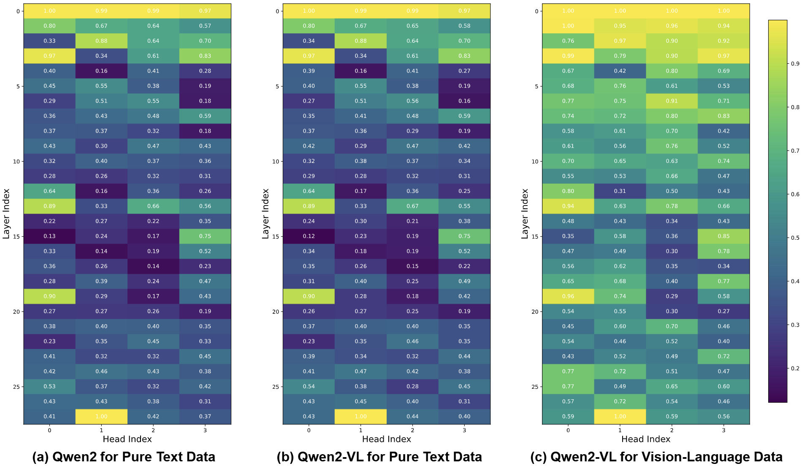
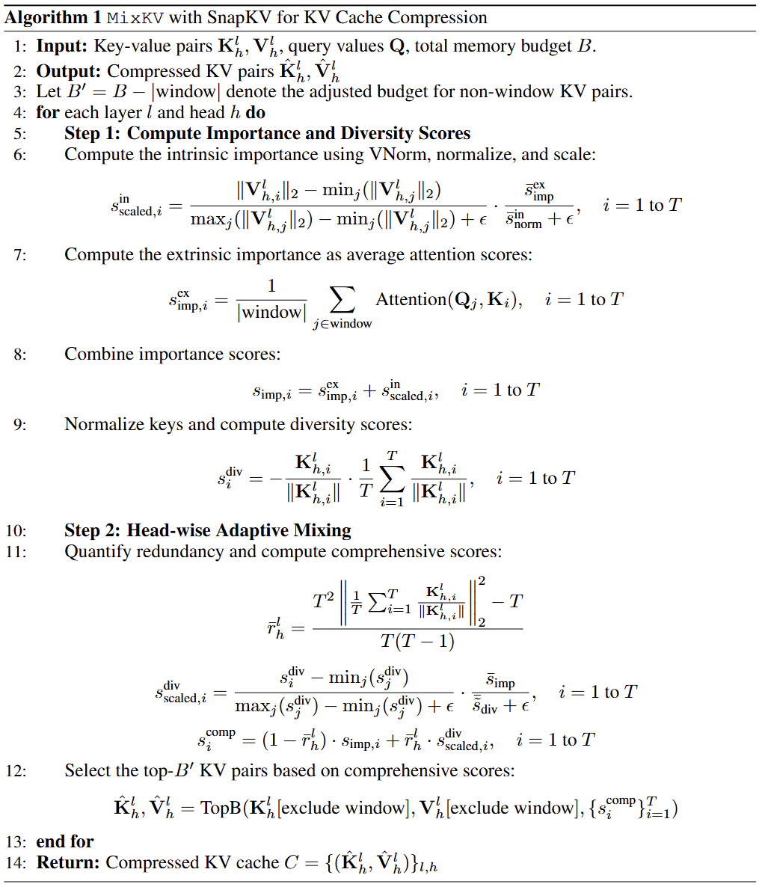
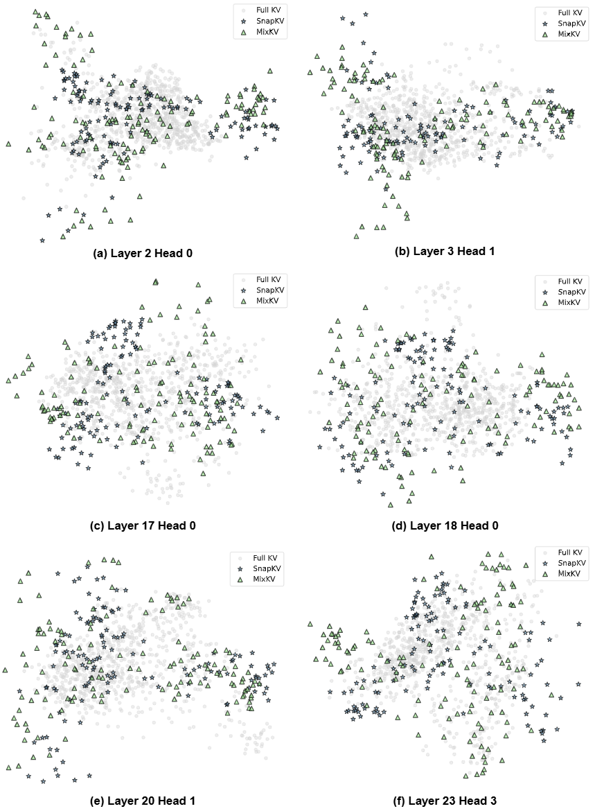
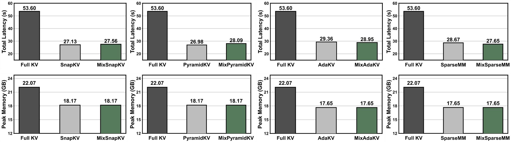

Contributions
(1) Semantic Redundancy Analysis. We conduct in-depth analyses of KV caches in LVLMs, revealing substantial inherent semantic redundancy. Besides, we demonstrate that importance-based methods fail to preserve full KV distribution coverage, exposing fundamental limitations.
(2) Mixing Importance with Diversity. Based on our analysis, we propose MixKV, a head-wise adaptive mechanism that quantifies semantic redundancy to create principled weighting between importance and diversity scores for joint optimization of KV cache compression.
(3) Comprehensive Experimental Validation. Extensive experiments across diverse multi-modal and text benchmarks demonstrate that MixKV yields consistent performance improvements for existing importance-based compression methods while maintaining inference efficiency.
Core Findings

Heterogeneous head-wise redundancy in LLMs and LVLMs. For both pure-text and vision-language data, different heads exhibit markedly different redundancy levels, and their overall patterns are highly similar: a head that is relatively more redundant on text remains relatively more redundant on vision-language inputs. We hypothesize that this is because different heads focus on different types of information: some heads primarily attend to local patterns and therefore exhibit higher semantic redundancy, while others capture more global information and consequently show much lower redundancy.
Overview
We argue that beyond importance, preserving diverse KV pairs at per-head granularity is essential for minimizing semantic redundancy while maintaining comprehensive information coverage. To this end, we propose MixKV, which adopts a principled "mixing importance with diversity" approach. Specifically, MixKV extends existing importance-based KV compression methods by incorporating head-wise semantic diversity evaluation. By independently measuring semantic similarity within each attention head, MixKV adaptively balances importance and diversity per head to achieve fine-grained joint optimization of KV cache compression in LVLMs.

MixKV enables KV cache compression methods (e.g. SnapKV, AdaKV, and SparseMM) to approximate the full original semantic distribution of the uncompressed KV cache more effectively.

PCA analysis of semantic coverage under KV compression.
Experimental Results
Since SparseMM does not provide head importance scores for InternVL3-8B, we cannot reproduce their results on this model. “Full KV” means caching all KV pairs (upper bound).
| Methods | DocVQA (%) | OCRBench (%) | TextVQA (%) | ChartQA (%) | TextCaps | ||||||||||
|---|---|---|---|---|---|---|---|---|---|---|---|---|---|---|---|
| 256 | 128 | 64 | 256 | 128 | 64 | 256 | 128 | 64 | 256 | 128 | 64 | 256 | 128 | 64 | |
| LLaVA-NeXT-Mistral-7B | |||||||||||||||
| Full KV | 63.6 | 52.9 | 65.7 | 52.9 | 0.707 | ||||||||||
| SnapKV | 59.7 | 55.2 | 47.3 | 45.0 | 39.0 | 31.9 | 63.5 | 61.0 | 57.1 | 50.2 | 47.5 | 42.7 | 0.650 | 0.558 | 0.444 |
| + MixKV | 61.7 | 58.1 | 48.8 | 49.9 | 44.7 | 36.1 | 65.2 | 64.3 | 60.1 | 50.8 | 47.7 | 43.6 | 0.708 | 0.659 | 0.514 |
| △ | +2.0 | +2.9 | +1.5 | +4.9 | +5.7 | +4.2 | +1.7 | +3.3 | +3.0 | +0.6 | +0.2 | +0.9 | +0.058 | +0.101 | +0.070 |
| PyramidKV | 58.2 | 54.3 | 43.4 | 44.1 | 39.4 | 29.1 | 62.9 | 60.9 | 54.8 | 49.1 | 47.1 | 40.8 | 0.621 | 0.553 | 0.407 |
| + MixKV | 60.8 | 57.2 | 45.1 | 49.7 | 43.7 | 32.0 | 64.9 | 63.8 | 57.8 | 50.8 | 47.5 | 41.3 | 0.687 | 0.656 | 0.466 |
| △ | +2.6 | +2.9 | +1.7 | +5.6 | +4.3 | +2.9 | +2.0 | +2.9 | +3.0 | +1.7 | +0.4 | +0.5 | +0.066 | +0.103 | +0.059 |
| AdaKV | 59.6 | 55.9 | 48.7 | 45.1 | 40.4 | 32.8 | 62.9 | 60.5 | 56.9 | 50.4 | 47.8 | 44.6 | 0.646 | 0.566 | 0.440 |
| + MixKV | 61.3 | 58.3 | 50.8 | 49.8 | 44.9 | 36.6 | 65.3 | 63.7 | 59.6 | 50.9 | 48.5 | 45.2 | 0.704 | 0.660 | 0.509 |
| △ | +1.7 | +2.4 | +2.1 | +4.7 | +4.5 | +3.8 | +2.4 | +3.2 | +2.7 | +0.5 | +0.7 | +0.6 | +0.058 | +0.094 | +0.069 |
| SparseMM | 61.6 | 60.8 | 57.6 | 51.9 | 50.7 | 46.2 | 65.1 | 64.7 | 62.8 | 51.9 | 51.2 | 48.9 | 0.680 | 0.634 | 0.524 |
| + MixKV | 61.9 | 61.0 | 59.2 | 50.8 | 50.4 | 49.5 | 65.2 | 65.0 | 64.4 | 51.8 | 51.5 | 50.6 | 0.682 | 0.652 | 0.575 |
| △ | +0.3 | +0.2 | +1.6 | -1.1 | -0.3 | +3.3 | +0.1 | +0.3 | +1.6 | -0.1 | +0.3 | +1.7 | +0.002 | +0.018 | +0.051 |
| InternVL3-8B | |||||||||||||||
| Full KV | 91.0 | 84.2 | 81.1 | 86.4 | 1.042 | ||||||||||
| SnapKV | 89.2 | 85.4 | 75.7 | 80.6 | 69.0 | 53.1 | 80.4 | 78.2 | 71.9 | 86.2 | 84.6 | 79.8 | 1.009 | 0.901 | 0.734 |
| + MixKV | 89.4 | 86.2 | 76.3 | 81.9 | 71.1 | 52.3 | 80.9 | 78.8 | 72.9 | 86.3 | 84.8 | 80.7 | 1.029 | 0.949 | 0.753 |
| △ | +0.2 | +0.8 | +0.6 | +1.3 | +2.1 | -0.8 | +0.5 | +0.6 | +1.0 | +0.1 | +0.2 | +0.9 | +0.020 | +0.048 | +0.019 |
| PyramidKV | 87.2 | 82.7 | 69.7 | 70.9 | 58.4 | 41.8 | 78.3 | 75.3 | 67.2 | 85.7 | 84.0 | 78.0 | 0.896 | 0.809 | 0.632 |
| + MixKV | 87.5 | 83.5 | 70.4 | 72.3 | 60.0 | 41.2 | 79.0 | 76.6 | 68.2 | 85.8 | 84.4 | 78.6 | 0.941 | 0.850 | 0.646 |
| △ | +0.3 | +0.8 | +0.7 | +1.4 | +1.6 | -0.6 | +0.7 | +1.3 | +1.0 | +0.1 | +0.4 | +0.6 | +0.045 | +0.041 | +0.014 |
| AdaKV | 89.2 | 86.0 | 77.2 | 80.8 | 70.2 | 53.1 | 80.4 | 78.0 | 71.8 | 86.2 | 84.4 | 80.4 | 1.013 | 0.921 | 0.759 |
| + MixKV | 89.5 | 86.7 | 78.1 | 82.4 | 71.6 | 52.3 | 80.8 | 78.7 | 72.9 | 86.2 | 85.2 | 80.9 | 1.034 | 0.955 | 0.782 |
| △ | +0.3 | +0.7 | +0.9 | +1.6 | +1.4 | -0.8 | +0.4 | +0.7 | +1.1 | +0.0 | +0.8 | +0.5 | +0.021 | +0.034 | +0.023 |
| Qwen2-VL-7B-Instruct | |||||||||||||||
| Full KV | 93.9 | 82.1 | 82.1 | 81.5 | 1.469 | ||||||||||
| SnapKV | 88.0 | 80.1 | 66.5 | 77.3 | 71.9 | 62.4 | 80.3 | 77.5 | 69.9 | 81.3 | 79.6 | 75.5 | 1.360 | 1.142 | 0.794 |
| + MixKV | 90.5 | 82.6 | 67.9 | 79.3 | 75.4 | 66.0 | 81.9 | 80.6 | 72.5 | 81.6 | 81.2 | 77.6 | 1.470 | 1.342 | 0.878 |
| △ | +2.5 | +2.5 | +1.4 | +2.0 | +3.5 | +3.6 | +1.6 | +3.1 | +2.6 | +0.3 | +1.6 | +2.1 | +0.110 | +0.200 | +0.084 |
| PyramidKV | 81.7 | 74.0 | 59.9 | 74.5 | 67.9 | 56.8 | 78.3 | 74.6 | 65.3 | 81.1 | 79.2 | 73.5 | 1.115 | 0.951 | 0.569 |
| + MixKV | 84.0 | 76.3 | 60.8 | 76.6 | 72.6 | 58.4 | 80.4 | 77.1 | 67.0 | 81.3 | 80.7 | 75.5 | 1.348 | 1.119 | 0.633 |
| △ | +2.3 | +2.3 | +0.9 | +2.1 | +4.7 | +1.6 | +2.1 | +2.5 | +1.7 | +0.2 | +1.5 | +2.0 | +0.233 | +0.168 | +0.064 |
| AdaKV | 87.4 | 81.2 | 67.1 | 77.8 | 71.0 | 62.1 | 79.9 | 77.0 | 70.3 | 80.8 | 79.6 | 75.9 | 1.345 | 1.146 | 0.775 |
| + MixKV | 90.3 | 82.1 | 67.8 | 79.3 | 74.7 | 65.5 | 81.8 | 79.6 | 71.2 | 81.5 | 80.9 | 77.4 | 1.448 | 1.275 | 0.878 |
| △ | +2.9 | +0.9 | +0.7 | +1.5 | +3.7 | +3.4 | +1.9 | +2.6 | +0.9 | +0.7 | +1.3 | +1.5 | +0.103 | +0.129 | +0.103 |
| SparseMM | 93.5 | 91.5 | 84.9 | 81.2 | 79.0 | 74.3 | 82.0 | 81.6 | 77.3 | 82.0 | 81.5 | 80.1 | 1.482 | 1.430 | 1.038 |
| + MixKV | 93.8 | 92.7 | 86.4 | 82.0 | 81.0 | 77.1 | 82.0 | 82.0 | 80.9 | 81.6 | 81.8 | 81.4 | 1.480 | 1.459 | 1.303 |
| △ | +0.3 | +1.2 | +1.5 | +0.8 | +2.0 | +2.8 | +0.0 | +0.4 | +3.6 | -0.4 | +0.3 | +1.3 | -0.002 | +0.029 | +0.265 |
“Full KV” refers to caching all KV pairs of the LLM (upper bound).
| Methods | Mobile Text | Mobile Icon/Widget | Desktop Text | Desktop Icon/Widget | Web Text | Web Icon/Widget | Average | |||||||
|---|---|---|---|---|---|---|---|---|---|---|---|---|---|---|
| 128 | 64 | 128 | 64 | 128 | 64 | 128 | 64 | 128 | 64 | 128 | 64 | 128 | 64 | |
| Qwen2.5-VL-7B-Instruct | ||||||||||||||
| Full KV | 97.2 | 87.7 | 91.2 | 77.1 | 88.5 | 82.3 | 88.5 | |||||||
| SnapKV | 65.5 | 28.6 | 78.7 | 53.1 | 86.1 | 57.2 | 74.3 | 57.1 | 76.9 | 46.6 | 74.4 | 49.8 | 75.3 | 46.9 |
| + MixKV | 86.6 | 35.5 | 85.3 | 60.2 | 87.1 | 71.1 | 75.0 | 65.7 | 85.0 | 53.0 | 76.4 | 56.2 | 83.3 | 54.9 |
| △ | +21.1 | +6.9 | +6.6 | +7.1 | +1.0 | +13.9 | +0.7 | +8.6 | +8.1 | +6.4 | +2.0 | +6.4 | +7.9 | +8.0 |
| PyramidKV | 45.5 | 11.0 | 62.1 | 34.1 | 82.0 | 33.0 | 75.0 | 47.9 | 69.2 | 20.5 | 71.4 | 24.1 | 65.6 | 26.1 |
| + MixKV | 64.1 | 15.9 | 74.4 | 42.2 | 87.1 | 41.8 | 74.3 | 47.1 | 76.9 | 24.8 | 71.9 | 27.1 | 74.1 | 31.1 |
| △ | +18.6 | +4.9 | +12.3 | +8.1 | +5.1 | +8.8 | -0.7 | -0.8 | +7.7 | +4.3 | +0.5 | +3.0 | +8.5 | +5.0 |
| AdaKV | 80.7 | 35.2 | 84.8 | 59.2 | 90.2 | 70.6 | 74.3 | 63.6 | 82.1 | 49.6 | 75.9 | 56.2 | 81.6 | 53.7 |
| + MixKV | 94.1 | 49.0 | 88.6 | 66.8 | 89.7 | 75.3 | 75.0 | 68.6 | 85.0 | 61.5 | 76.9 | 63.1 | 86.0 | 62.7 |
| △ | +13.4 | +13.8 | +3.8 | +7.6 | -0.5 | +4.7 | +0.7 | +5.0 | +2.9 | +12.0 | +1.0 | +6.9 | +4.4 | +9.0 |
“Full KV” refers to caching all KV pairs of the LLM (upper bound).
| Methods | NrtvQA | Qasper | MF-en | HotpotQA | 2WikiMQA | Musique | GovReport | QMSum | MultiNews | TREC | TriviaQA | SAMSum | PCount | PRe | Lcc | RB-P | Avg |
|---|---|---|---|---|---|---|---|---|---|---|---|---|---|---|---|---|---|
| Mistral-7B-Instruct-v0.2 | |||||||||||||||||
| Full KV | 26.81 | 33.19 | 49.26 | 43.02 | 27.12 | 18.78 | 32.80 | 24.16 | 27.02 | 71.00 | 86.23 | 42.64 | 2.75 | 86.98 | 55.09 | 53.01 | 42.49 |
| KV Cache Budget = 1024 | |||||||||||||||||
| SnapKV | 24.98 | 30.24 | 49.03 | 41.45 | 27.11 | 18.26 | 25.69 | 23.87 | 25.97 | 68.00 | 86.25 | 42.30 | 2.82 | 87.93 | 54.95 | 52.00 | 41.30 |
| + MixKV | 25.55 | 31.04 | 48.19 | 41.31 | 27.18 | 19.24 | 26.98 | 23.88 | 26.74 | 70.00 | 86.46 | 43.77 | 2.90 | 85.99 | 55.02 | 51.28 | 41.60 |
| △ | +0.57 | +0.80 | -0.84 | -0.14 | +0.07 | +0.98 | +1.29 | +0.01 | +0.77 | +2.00 | +0.21 | +1.47 | +0.08 | -1.94 | +0.07 | -0.72 | +0.30 |
| AdaKV | 25.15 | 30.60 | 49.06 | 40.93 | 26.92 | 18.81 | 25.88 | 23.96 | 25.84 | 69.00 | 86.24 | 43.01 | 2.85 | 88.68 | 55.19 | 52.46 | 41.54 |
| + MixKV | 25.31 | 30.56 | 48.83 | 41.96 | 26.95 | 18.27 | 26.77 | 23.85 | 26.37 | 70.50 | 86.63 | 43.44 | 2.62 | 86.52 | 55.65 | 51.87 | 41.63 |
| △ | +0.16 | -0.04 | -0.23 | +1.03 | +0.03 | -0.54 | +0.89 | -0.11 | +0.53 | +1.50 | +0.39 | +0.43 | -0.23 | -2.16 | +0.46 | -0.59 | +0.09 |
| KV Cache Budget = 512 | |||||||||||||||||
| SnapKV | 23.69 | 27.71 | 49.16 | 39.70 | 25.44 | 17.38 | 23.31 | 23.28 | 24.20 | 66.00 | 86.17 | 41.54 | 3.24 | 86.29 | 53.71 | 51.19 | 40.13 |
| + MixKV | 23.56 | 28.19 | 48.96 | 40.36 | 25.86 | 17.34 | 24.63 | 23.36 | 25.32 | 66.00 | 86.23 | 42.25 | 3.02 | 87.66 | 53.87 | 51.40 | 40.50 |
| △ | -0.13 | +0.48 | -0.20 | +0.66 | +0.42 | -0.04 | +1.32 | +0.08 | +1.12 | 0.00 | +0.06 | +0.71 | -0.22 | +1.37 | +0.16 | +0.21 | +0.37 |
| AdaKV | 24.35 | 27.33 | 48.76 | 40.07 | 26.38 | 17.97 | 23.73 | 23.51 | 24.31 | 67.50 | 86.38 | 42.53 | 3.06 | 86.65 | 53.90 | 51.57 | 40.50 |
| + MixKV | 24.26 | 28.39 | 48.90 | 40.86 | 26.33 | 17.07 | 24.63 | 23.32 | 25.41 | 69.00 | 86.51 | 42.67 | 3.07 | 86.44 | 54.46 | 51.69 | 40.81 |
| △ | -0.09 | +1.06 | +0.14 | +0.79 | -0.05 | -0.90 | +0.90 | -0.19 | +1.10 | +1.50 | +0.13 | +0.14 | +0.01 | -0.21 | +0.56 | +0.12 | +0.31 |
| Llama-3.1-8B-Instruct | |||||||||||||||||
| Full KV | 30.22 | 45.37 | 55.80 | 55.97 | 45.00 | 31.26 | 35.12 | 25.38 | 27.20 | 72.50 | 91.64 | 43.57 | 9.41 | 99.50 | 62.88 | 56.43 | 49.20 |
| KV Cache Budget = 1024 | |||||||||||||||||
| SnapKV | 27.10 | 43.91 | 55.07 | 55.60 | 45.17 | 30.47 | 27.84 | 24.44 | 25.75 | 69.00 | 91.89 | 42.69 | 9.44 | 99.50 | 62.49 | 56.30 | 48.86 |
| + MixKV | 27.50 | 44.19 | 55.42 | 55.82 | 45.40 | 30.65 | 28.83 | 24.75 | 26.26 | 70.00 | 91.62 | 42.88 | 8.96 | 99.50 | 62.69 | 56.41 | 49.30 |
| △ | +0.40 | +0.28 | +0.35 | +0.22 | +0.23 | +0.18 | +0.99 | +0.31 | +0.51 | +1.00 | -0.27 | +0.19 | -0.48 | +0.00 | +0.20 | +0.11 | +0.44 |
| AdaKV | 28.16 | 43.98 | 54.68 | 56.14 | 45.19 | 30.30 | 28.35 | 24.80 | 26.11 | 72.50 | 91.72 | 42.48 | 8.74 | 99.50 | 62.94 | 56.51 | 49.27 |
| + MixKV | 27.98 | 44.28 | 55.03 | 56.03 | 45.58 | 30.55 | 29.06 | 24.58 | 26.70 | 72.50 | 91.42 | 43.37 | 9.46 | 99.50 | 62.65 | 56.97 | 49.37 |
| △ | -0.18 | +0.30 | +0.35 | -0.11 | +0.39 | +0.25 | +0.71 | -0.22 | +0.59 | +0.00 | -0.30 | +0.89 | +0.72 | +0.00 | -0.29 | +0.46 | +0.10 |
| KV Cache Budget = 512 | |||||||||||||||||
| SnapKV | 27.42 | 38.95 | 53.57 | 55.20 | 44.68 | 29.75 | 25.55 | 24.21 | 24.28 | 64.50 | 92.35 | 41.04 | 9.98 | 99.50 | 62.50 | 54.93 | 46.53 |
| + MixKV | 26.76 | 41.77 | 53.77 | 55.19 | 44.72 | 30.02 | 26.03 | 24.28 | 25.27 | 69.00 | 91.44 | 42.24 | 9.98 | 99.50 | 61.84 | 55.17 | 47.37 |
| △ | -0.66 | +2.82 | +0.20 | -0.01 | +0.04 | +0.27 | +0.48 | +0.07 | +0.99 | +4.50 | -0.91 | +1.20 | +0.00 | +0.00 | -0.66 | +0.24 | +0.84 |
| AdaKV | 25.96 | 40.26 | 52.82 | 54.55 | 43.83 | 30.43 | 25.76 | 24.06 | 24.69 | 69.00 | 92.05 | 42.10 | 9.45 | 99.50 | 62.58 | 55.59 | 46.42 |
| + MixKV | 26.13 | 42.08 | 53.18 | 55.47 | 43.88 | 28.80 | 26.68 | 24.03 | 25.35 | 70.00 | 91.01 | 42.79 | 9.41 | 99.50 | 62.92 | 55.82 | 46.75 |
| △ | +0.17 | +1.82 | +0.36 | +0.92 | +0.05 | -1.63 | +0.92 | -0.03 | +0.66 | +1.00 | -1.04 | +0.69 | -0.04 | +0.00 | +0.34 | +0.23 | +0.33 |
Results here report budgets = 128 and 64.
| Methods | DocVQA (%) | OCRBench (%) | TextVQA (%) | ChartQA (%) | TextCaps | |||||
|---|---|---|---|---|---|---|---|---|---|---|
| 128 | 64 | 128 | 64 | 128 | 64 | 128 | 64 | 128 | 64 | |
| InternVL3-38B | ||||||||||
| Full KV | 93.5 | 85.9 | 83.8 | 88.6 | 0.953 | |||||
| SnapKV | 87.5 | 85.2 | 77.8 | 64.3 | 82.0 | 78.5 | 87.5 | 85.2 | 0.932 | 0.822 |
| + MixKV | 92.1 | 86.9 | 79.3 | 65.8 | 82.8 | 79.4 | 88.2 | 85.8 | 0.959 | 0.859 |
| △ | +4.6 | +1.7 | +1.5 | +1.5 | +0.8 | +0.9 | +0.7 | +0.6 | +0.027 | +0.037 |
| AdaKV | 92.0 | 87.6 | 79.6 | 67.8 | 82.0 | 79.3 | 87.4 | 85.3 | 0.940 | 0.841 |
| + MixKV | 92.3 | 88.5 | 81.1 | 69.2 | 82.9 | 80.2 | 88.2 | 86.0 | 0.961 | 0.859 |
| △ | +0.3 | +0.9 | +1.5 | +1.4 | +0.9 | +0.9 | +0.8 | +0.7 | +0.021 | +0.018 |
Results here report budgets = 128 and 64.
| Methods | DocVQA (%) | OCRBench (%) | TextVQA (%) | ChartQA (%) | TextCaps | |||||
|---|---|---|---|---|---|---|---|---|---|---|
| 128 | 64 | 128 | 64 | 128 | 64 | 128 | 64 | 128 | 64 | |
| Qwen3-VL-30B-A3B-Instruct | ||||||||||
| Full KV | 94.5 | 84.0 | 83.5 | 85.1 | 0.287 | |||||
| SnapKV | 91.9 | 83.8 | 71.0 | 55.2 | 75.3 | 75.3 | 83.8 | 79.8 | 0.314 | 0.272 |
| + MixKV | 93.2 | 86.2 | 80.7 | 68.8 | 80.8 | 79.7 | 84.5 | 80.8 | 0.411 | 0.349 |
| △ | +1.3 | +2.4 | +9.7 | +13.6 | +5.5 | +4.4 | +0.7 | +1.0 | +0.097 | +0.077 |

For a context length of 32,000, “Full KV” refers to caching the entire sequence, whereas KV compression strategies employ a budget of 64. The upper part is total time, while the lower part is peak memory.
Citation
If you find this project helpful, please consider citing our paper with:
@article{liu2025mixkv,
title={Mixing Importance with Diversity: Joint Optimization for KV Cache Compression in Large Vision-Language Models},
author={Liu, Xuyang and Gui, Xiyan and Zhang, Yuchao and Zhang, Linfeng},
journal={arXiv preprint arXiv:2510.20707},
year={2025}
}